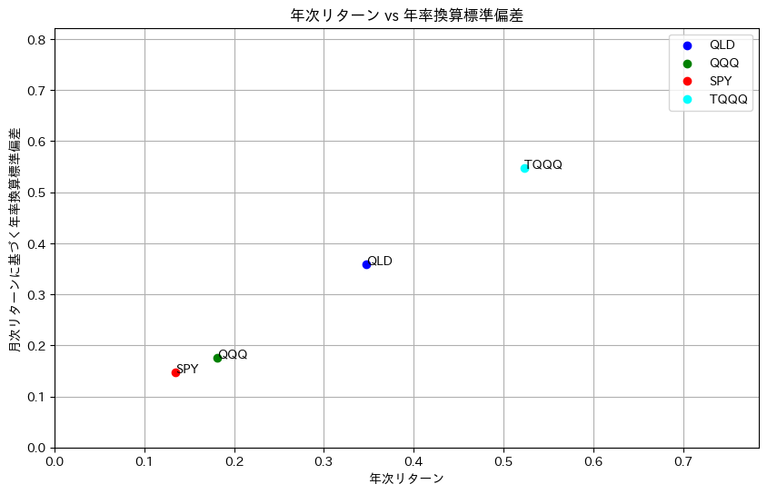
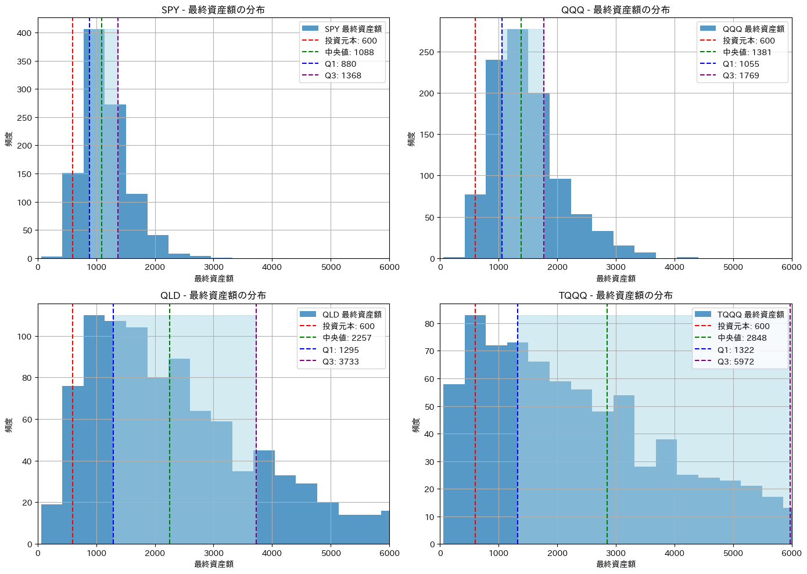

# TODO: Complete markdownサブテーマ：レバナス（QLD）、TQQQの一括・積立シミュレーション
import yfinance as yf
import pandas as pd
import numpy as np
import matplotlib.pyplot as plt
import japanize_matplotlib # 日本語表示に対応# 対象のティッカーシンボル
tickers = ['SPY', 'QQQ', 'QLD', 'TQQQ']
ticker_colors = {
'SPY': 'red',
'QQQ': 'green',
'QLD': 'blue',
'TQQQ': 'cyan'
}
# データの取得
data = yf.download(tickers, start="2010-03-01", end=pd.Timestamp.now().strftime('%Y-%m-%d'))
# 必要な列のみ抽出
data = data['Adj Close']
data[*********************100%%**********************] 4 of 4 completed| QLD | QQQ | SPY | TQQQ | |
|---|---|---|---|---|
| Date | ||||
| 2010-03-01 | 1.782018 | 39.847015 | 85.756416 | 0.471539 |
| 2010-03-02 | 1.792758 | 39.969841 | 85.993988 | 0.474375 |
| 2010-03-03 | 1.797055 | 40.013737 | 86.070633 | 0.477008 |
| 2010-03-04 | 1.808410 | 40.145355 | 86.331230 | 0.482274 |
| 2010-03-05 | 1.861805 | 40.750832 | 87.565170 | 0.503593 |
| ... | ... | ... | ... | ... |
| 2024-05-03 | 83.320000 | 435.480011 | 511.290009 | 56.700001 |
| 2024-05-06 | 85.180000 | 440.250000 | 516.570007 | 58.560001 |
| 2024-05-07 | 85.139999 | 440.320007 | 517.140015 | 58.560001 |
| 2024-05-08 | 85.050003 | 440.059998 | 517.190002 | 58.450001 |
| 2024-05-09 | 85.360001 | 441.019989 | 520.169983 | 58.770000 |
3574 rows × 4 columns
# 月次リターンを計算
monthly_returns = data.resample('M').ffill().pct_change()
# 月次リターンから年次リターンを計算（累積積を使用）
cumulative_annual_returns = (1 + monthly_returns).resample('A').prod() - 1
# 月次リターンの標準偏差を計算
monthly_std_devs = monthly_returns.std()
# 年率換算標準偏差は既に月次リターンに基づいているため、そのまま使用
annualized_std_devs_from_monthly = monthly_std_devs * np.sqrt(12)
# 結果をDataFrameに格納（累積積に基づく年次リターンを使用）
results = pd.DataFrame({
"年次リターン": cumulative_annual_returns.median(), # 年次リターンの中央値
"月次リターンに基づく年率換算標準偏差": annualized_std_devs_from_monthly
})
results| 年次リターン | 月次リターンに基づく年率換算標準偏差 | |
|---|---|---|
| QLD | 0.347705 | 0.359137 |
| QQQ | 0.181125 | 0.175668 |
| SPY | 0.134638 | 0.147230 |
| TQQQ | 0.522872 | 0.547964 |
# 散布図をプロット
plt.figure(figsize=(10, 6))
# results DataFrameをループして、各ティッカーのポイントをプロット
for i, (index, row) in enumerate(results.iterrows()):
# トレンドグラフで定義した色を使用
color = ticker_colors.get(index, 'gray') # ティッカーに色が割り当てられていない場合は'gray'を使用
plt.scatter(row["年次リターン"], row["月次リターンに基づく年率換算標準偏差"], color=color, label=index)
plt.annotate(index, (row["年次リターン"], row["月次リターンに基づく年率換算標準偏差"]))
# 軸のラベルを設定
plt.xlabel('年次リターン')
plt.ylabel('月次リターンに基づく年率換算標準偏差')
# 軸の範囲を設定
x_max = results["年次リターン"].max() * 1.5
y_max = results["月次リターンに基づく年率換算標準偏差"].max() * 1.5
plt.xlim(0, x_max)
plt.ylim(0, y_max)
# グラフのタイトルを設定
plt.title('年次リターン vs 年率換算標準偏差')
# グリッドを表示
plt.grid(True)
# 凡例を表示
plt.legend()
plt.show()
# パラメータ設定
initial_investment = 600 # 初期投資額
monthly_investment = 0 # 月次積立額
investment_duration = 60 # 投資期間（月）
simulations = 1000 # シミュレーション回数
# シミュレーションの実行と結果の収集
all_final_values = []
for ticker in tickers:
# 既存のコードから月次リターンの平均と標準偏差を取得
monthly_return_mean = monthly_returns[ticker].mean()
monthly_return_std = monthly_std_devs[ticker]
final_values = np.zeros(simulations)
for simulation in range(simulations):
total_value = initial_investment
for month in range(investment_duration):
monthly_return = np.random.normal(monthly_return_mean, monthly_return_std)
total_value += monthly_investment
total_value = total_value * (1 + monthly_return)
final_values[simulation] = total_value
all_final_values.append(final_values)
# 全シミュレーション結果からビンの範囲を決定するための配列を生成
flat_all_final_values = [value for sublist in all_final_values for value in sublist]
min_value = min(flat_all_final_values)
max_value = max(flat_all_final_values)
bins = np.linspace(min_value, max_value, 500) # binsの数を500に設定
# 投資元本の計算（初期投資額 + 月次積立投資額の合計）
total_investment = initial_investment + monthly_investment * investment_duration
# x_maxをシミュレーション結果の最大値を基に設定
#x_max = max_value * 1.1 # 最大値の110%をX軸の最大値とする
x_max = total_investment*10# 2x2のグリッドでサブプロットを作成し、X軸の範囲を設定
fig, axes = plt.subplots(nrows=2, ncols=2, figsize=(14, 10))
axes = axes.flatten()
for i, ticker in enumerate(tickers):
ax = axes[i]
ticker_final_values = all_final_values[i]
median_value = np.median(ticker_final_values)
Q1 = np.percentile(ticker_final_values, 25)
Q3 = np.percentile(ticker_final_values, 75)
# ヒストグラムをプロット
n, bins, patches = ax.hist(ticker_final_values, bins=bins, alpha=0.75, label=f'{ticker} 最終資産額')
# Q1からQ3の間を透明な色で塗りつぶす
ax.fill_betweenx([0, max(n)], Q1, Q3, color='lightblue', alpha=0.5)
# 投資元本、中央値、Q1、Q3の線を追加
ax.axvline(x=total_investment, color='r', linestyle='--', label=f'投資元本: {total_investment:.0f}')
ax.axvline(x=median_value, color='green', linestyle='--', label=f'中央値: {median_value:.0f}')
ax.axvline(x=Q1, color='blue', linestyle='--', label=f'Q1: {Q1:.0f}')
ax.axvline(x=Q3, color='purple', linestyle='--', label=f'Q3: {Q3:.0f}')
ax.set_title(f'{ticker} - 最終資産額の分布')
ax.set_xlabel('最終資産額')
ax.set_ylabel('頻度')
ax.legend()
ax.grid(True)
ax.set_xlim(0, x_max)
plt.tight_layout()
plt.show()